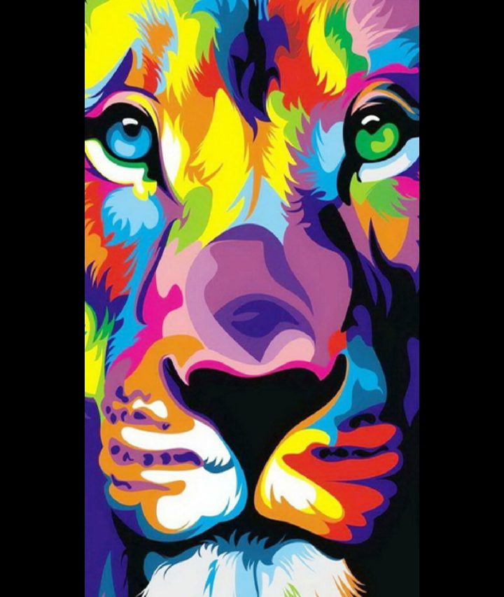

painting, the expression of ideas and emotions, with the creation of certain aesthetic qualities, in a two-dimensional visual language. The elements of this language—its shapes, lines, colours, tones, and textures—are used in various ways to produce sensations of volume, space, movement, and light on a flat surface.
 PaintingThe National Gallery of Art has an open access policy for images of works of art in our permanent collection which the Gallery believes to be in the public domain. Images of these works are available for download free of charge for any use, whether commercial or non-commercial.